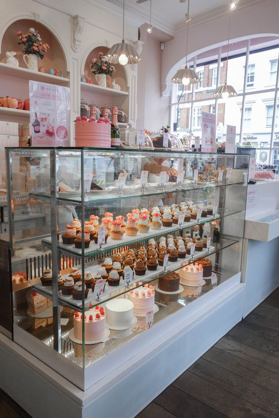

My Working Experience
Brodin's Station

Brodin Station is a restaurant that provide many kind of western food at a reasonable price and many people enjoy their food. It is located at Ketereh, Kelantan on the left side of Sekolah Kebangsaan Seri Ketereh. This is my first work experience. I work at Brodin Station after SPM and from there I realise how hard it is to make money and how we should appreciate our parents more. I work as a waiter where i need to get order from customers, serve the food and clean tables. From there I learn how to act with many customers with many kind of attitudes and it is a valuable experience working there
Pizza Hut G-Orange

Pizza Hut G-Orange is located at Tunjong about 15 minutes from my home, Ketereh. I work here during my semester break. My work is to greet customers, take orders, serve the food, clean the table and setting up the table. I really enjoy working there because it is more professional than my previous work where there is rules that need to be follow since Pizza Hut is a well-known brand. I learn so many things there and met so many people who are really kind and sweet. I am really thankful for the precious experience i got and for the managers who have taught me so much things
Cik Bakes Bakery
I know how to bake since I was in Primary School since i really enjoy sweet things. During my primary school, I have started selling cakes and cookies at school. I worked at Cik Bakes Bakery after my diploma and from there I manage to improve my baking skills and I learned so many recipes